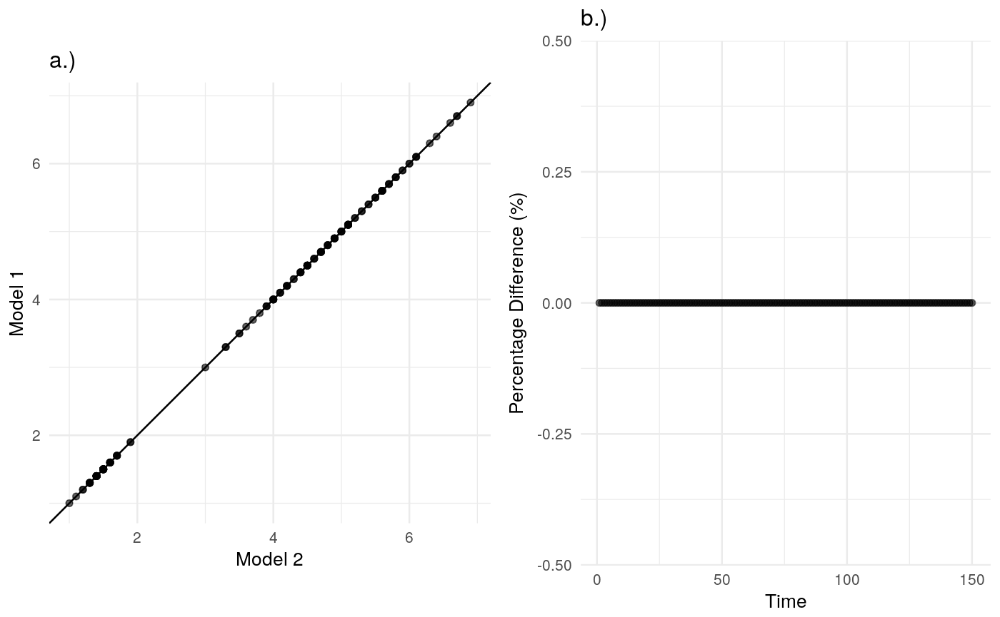

Compare Deterministic Model Trajectories and Stochastic Mean Field Dynamics
Compare Deterministic Model Trajectories and Stochastic Mean Field Dynamics
plot_model_comparision(df1, df2, com_var, id_var = NULL, sum_fn = median, theme = theme_minimal, plot = TRUE, plot_titles = c("a.)", "b.)"), plots_as_list = FALSE, model_1 = NULL, model_2 = NULL)
Arguments
| df1 | A dataframe containing the vector to be compared for a model |
|---|---|
| df2 | A dataframe containing the vector to be compared for a second model |
| com_var | The vector to be compared; use unquoted name (NSE). |
| id_var | A character string indicating the id variable to summarise over if required. |
| sum_fn | The summary function to use to summarise the stochastic simulation, defaults to the median. |
| theme | Supply a ggplot theme function to customise appearance. |
| plot | Logical, if TRUE returns a plot, if FALSE returns the intermediate dataframe. |
| plot_titles | A length 2 character vector containing the plot titles, defaults to a.), and b.). |
| plots_as_list | Logical, if TRUE plots are returned as a list object, if FALSE (the default) plots are combined using grid.arrange. |
| model_1 | A character string of the name to give the first model. |
| model_2 | A character string of the name to give the second model. |
Value
A comparision plot between two model vectors
See also
plot_model_comparision model_df_to_vector aggregate_model_internal
Examples
library(dplyr) ## Example for unique model output plot_model_comparision(iris, iris, Petal.Length)#> TableGrob (1 x 2) "arrange": 2 grobs #> z cells name grob #> 1 1 (1-1,1-1) arrange gtable[layout] #> 2 2 (1-1,2-2) arrange gtable[layout]## Example for simulated model output df <- bind_rows(iris %>% mutate(sim = 1, id = 1:length(sim)), iris %>% mutate(sim = 2, id = 1:length(sim))) plot_model_comparision(df, iris, com_var = Petal.Length, id_var = "id")#> TableGrob (1 x 2) "arrange": 2 grobs #> z cells name grob #> 1 1 (1-1,1-1) arrange gtable[layout] #> 2 2 (1-1,2-2) arrange gtable[layout]